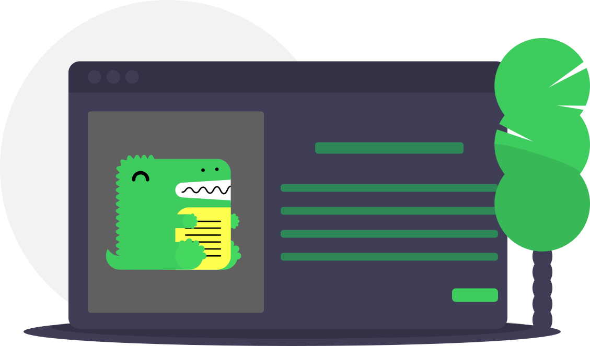

NestJS LINE
Collection of NestJS modules for building LINE bots

Easy to Use
NestJS LINE is designed to be easily installed and used to get your LINE bot up and running quickly.

Focus on What Matters
NestJS LINE lets you focus on your bot, and we'll do the chores. Go ahead and start adding some commands and events.

Inspired by Necord
NestJS LINE was inspired by Necord, a popular NestJS module, used to design DiscordJS bot using NestJS